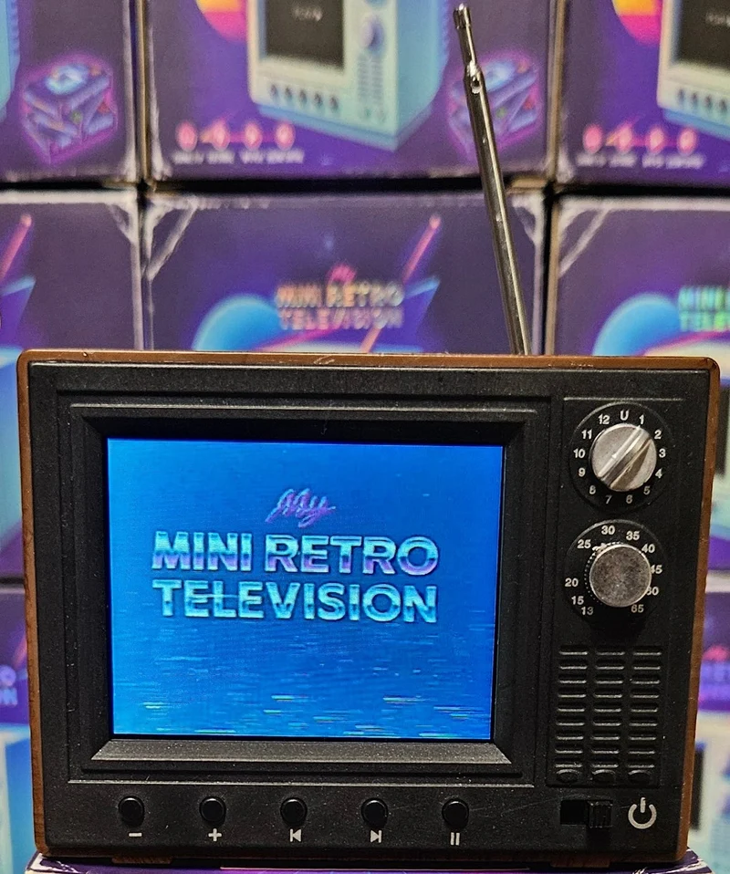
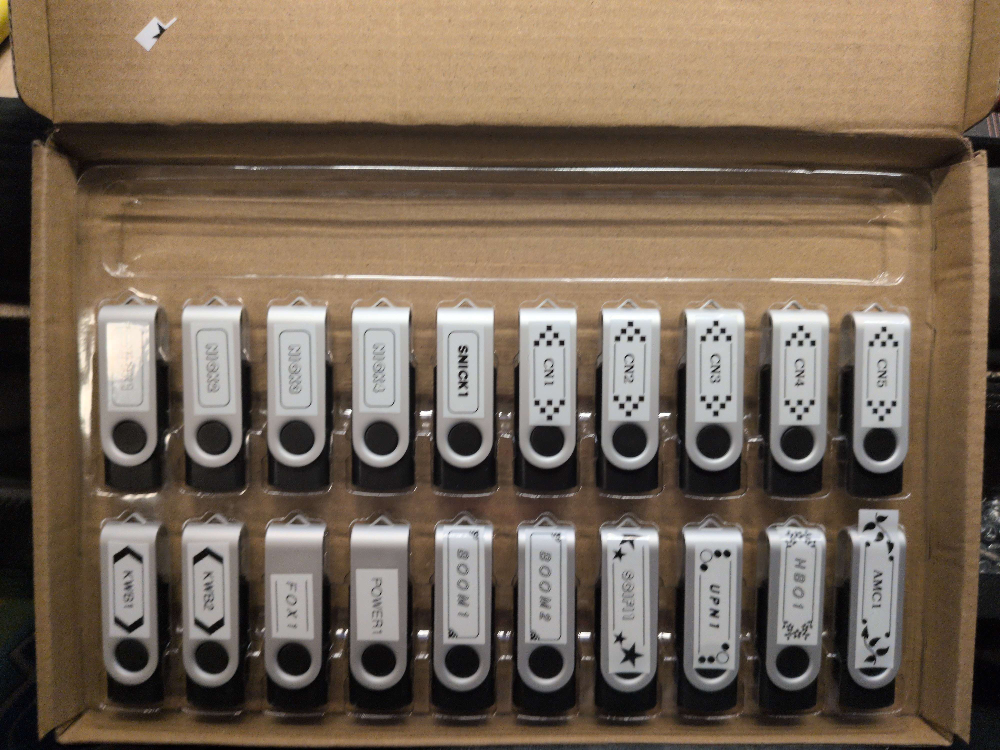
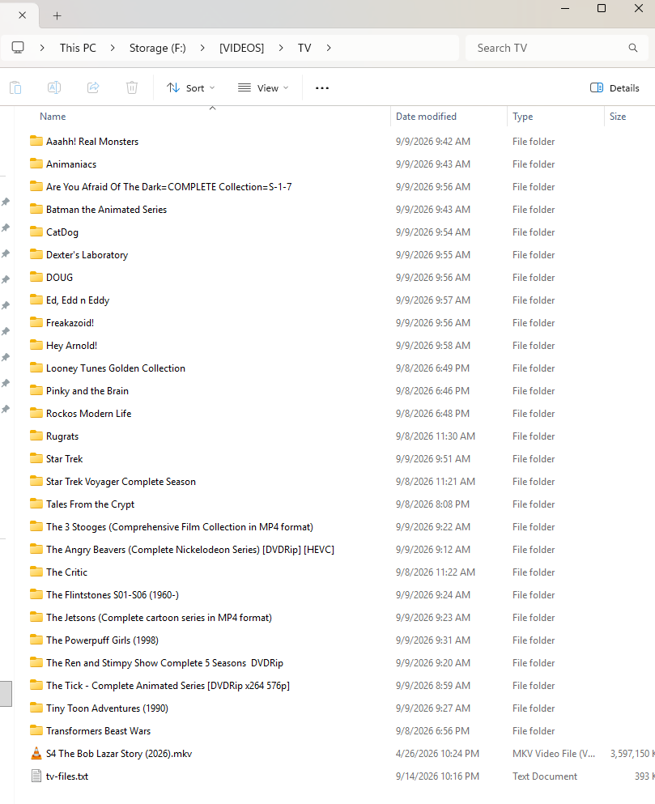

I Turned A Tiny TV Into A Cartridge Console
I bought this little thing called a My Mini Retro Television.
It is exactly what it sounds like.

A tiny fake old television with a little screen, a speaker, some buttons, and a bunch of old videos loaded onto it.
You turn it on, it plays a little startup video, and then you can click through the videos like you are changing channels.
There is even a little static / channel-change animation between videos.
It is very stupid. I love it.
The first thing I did was plug it into my computer because obviously I needed to know what was actually going on inside it.
The internal storage showed up like a normal USB drive with a few gigabytes of videos on it.
There were also a bunch of weird tiny files like:
._VIDEODROME TV SPOT.mp4
._TWILIGHT ZONE MARATHON.mp4
._TONIGHT ON HBO 1990.mp4They were only a few KB each and looked like broken videos.
Turns out those are just AppleDouble metadata files from a Mac.
So that mystery was solved pretty quickly.
The actual videos were normal MP4 files.
One file immediately stood out:
0 MY MINI RETRO TELEVISION.mp4That was the startup video.
I pulled it off the TV and inspected it so I would have a known-good format to work from.
It is:
H.264
618x480
30 FPS
yuv420p
AAC audio
44.1 kHz stereoWhich is incredibly useful because now I know exactly what this tiny little goblin television already likes.
So naturally the next question was:
Can I put my own videos on it?
Yes. Very yes.
I deleted the videos from the internal storage, backed everything up first because I am reckless but not stupid, and put Planet of the Apes on it. All of them. A whole galaxy of apes.
It played!
At this point I discovered something even better. The TV also supports USB flash drives.
This changed the entire project.
Instead of constantly replacing the internal storage, I could leave the TV basically stock and treat USB drives like cartridges.
Tiny TV cartridges.
I made a little diagnostic pack with four videos:
000 STARTUP SORT TEST.mp4
001 CHANNEL ONE.mp4
002 CHANNEL TWO.mp4
003 CHANNEL THREE.mp4Each one had a giant number on screen and a different number of beeps so I could tell exactly what the TV was doing.
The first problem was immediately very 2026.
All the flash drives I could find were 64GB.
Windows will not normally let you format a 64GB drive as FAT32 through the regular format dialog.
Of course.
So I just threw the test files on it and plugged it intop the little TV anyways.
That worked perfectly. The TV saw the drive. The videos played. The audio worked. The files played sequentially. The numbering controlled the order.
Beautiful. So my problem, was not even a problem.
Then things got more interesting.
The TV behaves differently when it is playing from internal storage versus USB.
With the internal storage, I get:
startup video
video
channel-change static
video
channel-change static
...
power-off movieWith a USB drive inserted, I get:
startup video
"USB drive inserted"
USB video
USB video
USB video
...No channel-change animation. No power-off movie.
And there is a hardware / firmware message on screen telling me the USB drive was inserted.
That message is now on my list.
I do not know if I can remove it. I do not know if I can change the text.
I definitely do not know if I can replace it with a tiny VHS cassette graphic.
But I have now ordered two more televisions as backups, so science may happen.
The USB discovery also gave me the dumbest and therefore best idea in the entire project. The flash drives should be physical media.
I bought twenty 4GB flash drives.

The idea is to make each one feel like a little cable TV cartridge.
Not twenty different shows.
Actual stations.
Things like:
NICK01
NICK02
NICK03
NICK04
SNICK
CN01
CN02
CN03
CN04
CN05
KWB01
KWB02
FOX96
BOOM01
BOOM02
POWER
SCIFI
UPN
HBO
AMCSo instead of putting one season of one show on a drive, I am building little fake broadcasts.
A Nickelodeon cart might have Rugrats, Hey Arnold!, CatDog, Doug, Angry Beavers, Rocko, etc.
A Cartoon Network cart might have Dexter’s Laboratory, The Powerpuff Girls, Ed, Edd n Eddy, Batman, Freakazoid, and Animaniacs.
The goal is not to make a “best of” playlist.
I want it to feel like I turned the TV on in 1999 and just started watching whatever happened to be on.
That meant I had to start researching what was actually syndicated and rerun heavily instead of just picking my favorite episodes.
Because if I am going to pretend this tiny plastic television is cable TV, apparently I am going to take that responsibility seriously.
I also dumped the contents of my TV library into a giant file list so I could start planning the carts around what I actually own.
There is a lot.
Nickelodeon.
Cartoon Network.
Kids’ WB.
Star Trek.
Voyager.
Tales from the Crypt.
Three Stooges.
Beast Wars.

It turns out I have accidentally been preparing for this project for years.
The next missing piece was commercials.
If the whole point is to make this feel like old television, then going:
Rugrats
Hey Arnold!
CatDog
Dougis not enough.
It needs this:
Rugrats
1997 cereal commercial
Hey Arnold!
Nintendo commercial
CatDog
Pizza Hut commercial
Doug
PSANow we are getting somewhere.
I started looking for old commercial archives and found a few big collections.
Some have individually clipped commercials.
Some are giant VHS commercial-break dumps.
Some are old Nickelodeon, Cartoon Network, Kids’ WB, Fox Kids, Disney, HBO-ish late-night stuff, and general 90s television.
I am currently downloading several of those collections.
Some of the torrents are being annoying and hanging on missing files because apparently even my fake 90s cable system has infrastructure problems.
The plan is to build a large commercial library, hopefully around 120-150 clips, then split them into pools like:
KIDS_90S
KIDS_00S
GENERAL_90S
GENERAL_00S
LATE_NIGHT
PSAThen each fake station cartridge can pull commercials from the appropriate pool.
I am also looking for old network IDs and bumpers.
The little clips that say things like:
You're watching Nickelodeon
We'll be right back
Now back to the show
Cartoon Network
Kids' WBThose will make the cartridges feel much more like actual TV stations instead of folders full of videos.
Eventually I want each cart to start with a station ident, play a sequence of shows, drop in commercials between them, and maybe use fake static or tracking glitches to recreate the channel-change effect that USB mode loses.
There is also going to be a cart-builder script because I am absolutely not doing all of this manually twenty times.
The builder will eventually take:
a station
a list of shows
a commercial pool
some bumpers
a startup identand turn all of it into correctly numbered MP4 files encoded for the tiny television.
That part is still ahead of me.
Right now I have the television figured out enough to know this is actually going to work.
The USB cartridges work.
The playback order works.
The format works.
The station lineup exists.
The commercial archives are downloading.
And there are twenty tiny flash drives on the way to becoming the world’s least useful cable provider.
I also want to 3D print little VHS cassette cases for the flash drives. Maybe. Probably.
One thing at a time.